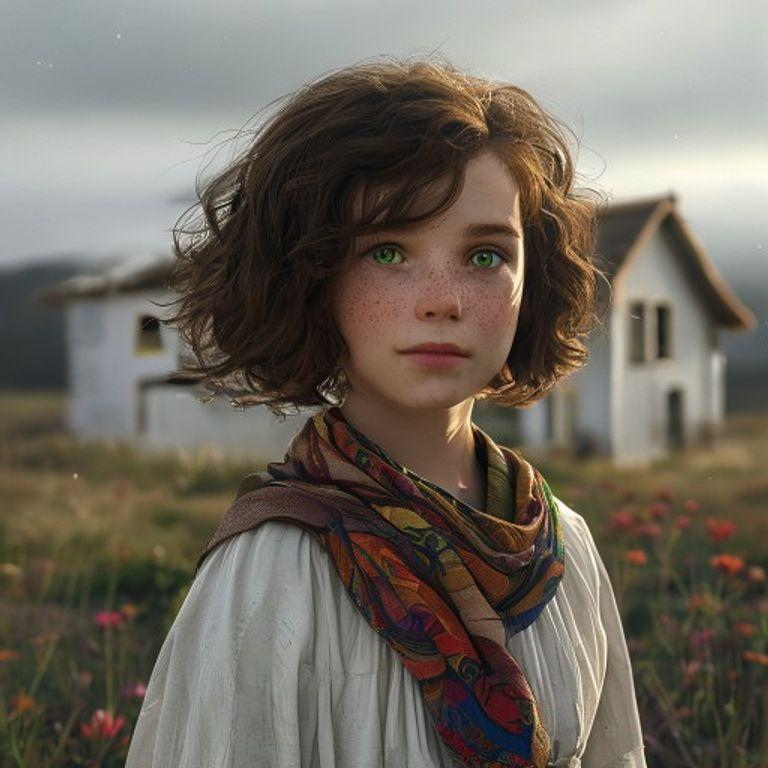
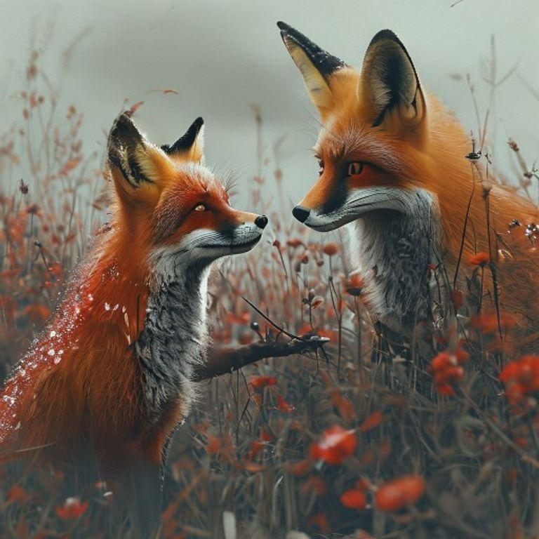
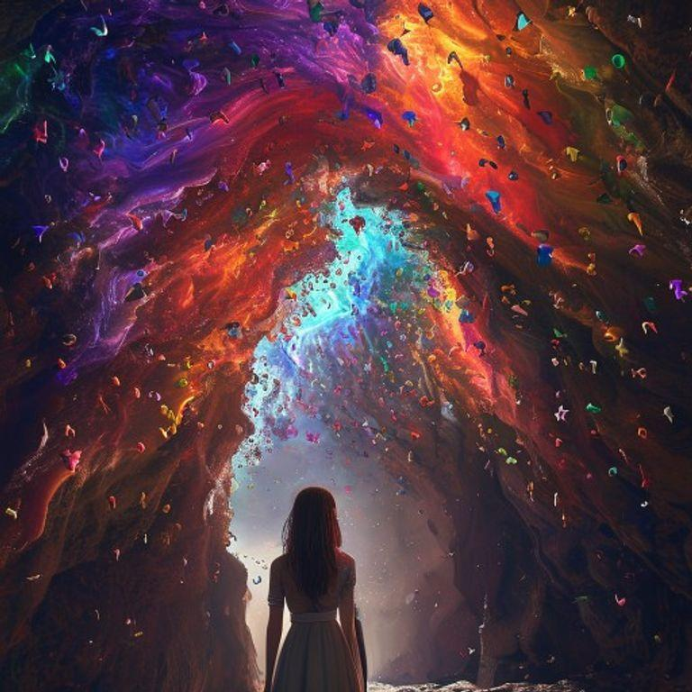
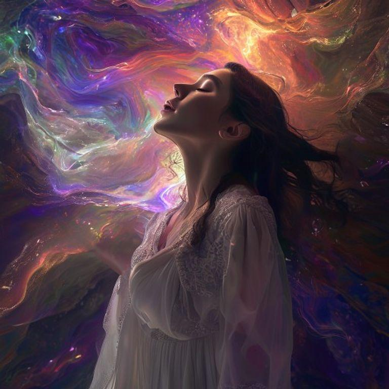
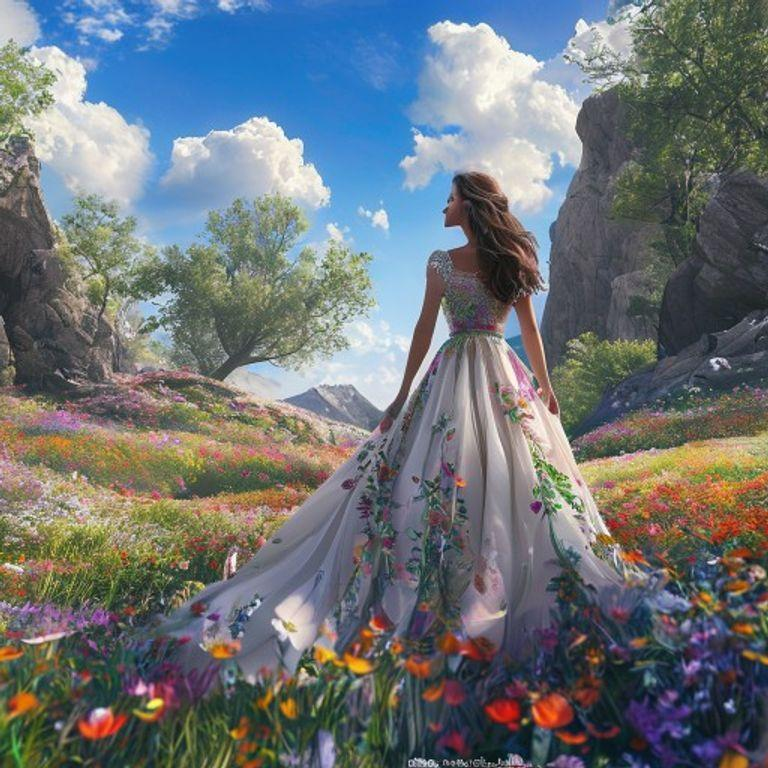
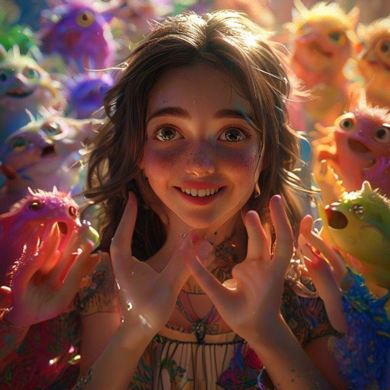
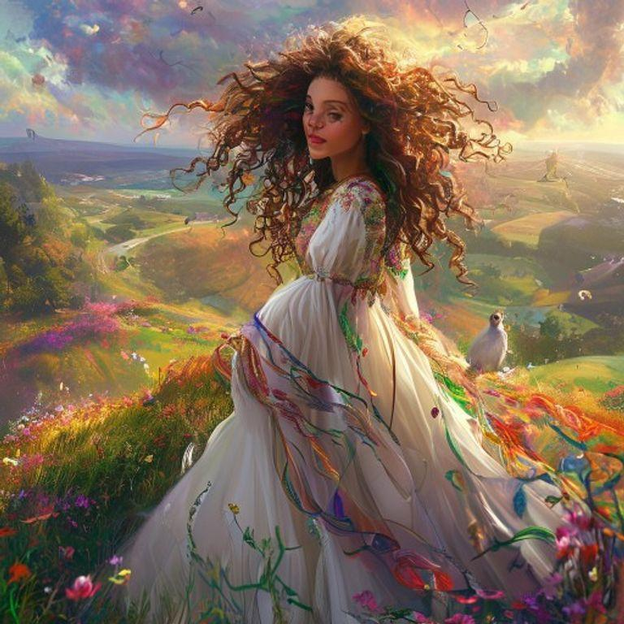
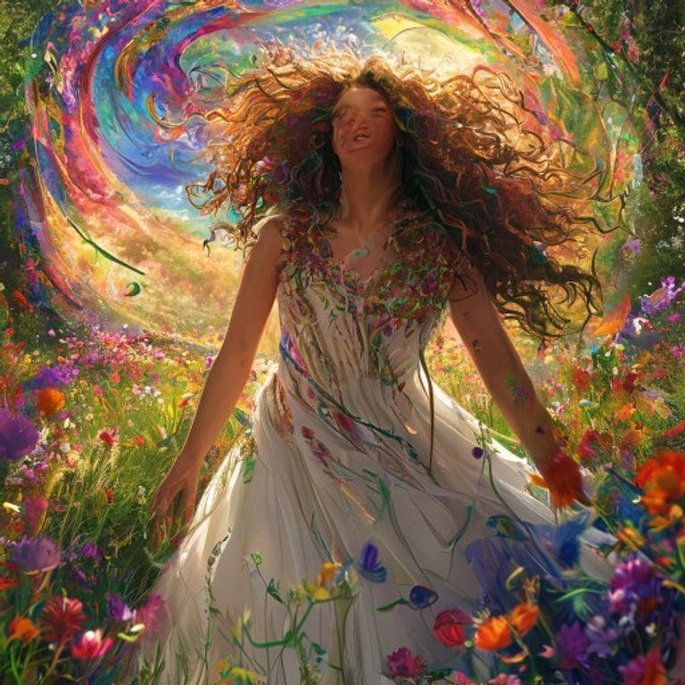

The Chroma Whisperer: A Tale of Harmony and Hue


In a world where colors were alive, a young girl named Aria was born with a special gift – the ability to hear the whispers of the hues. She lived in a small village on the edge of a vast, gray landscape that was once full of vibrant colors, but had slowly lost its vibrancy over time.

One day, a mischievous hue named Reddy appeared to Aria in the form of a playful, red fox. Reddy told Aria that the hues were in disarray and that the world was losing its color. Aria knew she had to help, but she didn't know where to start.

Reddy led Aria to a hidden cave deep within the gray landscape, where the hues were gathered in a great, swirling storm. Aria saw hues of every color, each one vying for attention and struggling to be heard. She knew she had to find a way to harmonize the hues and restore balance to the world.

Aria began to sing a gentle melody, one that she hoped would soothe the hues and bring them into harmony. As she sang, the hues began to calm, their swirling storm slowing to a gentle dance. Aria's voice was like a balm to the hues, and they began to respond to her song.

As the hues harmonized, the world outside the cave began to transform. The gray landscape slowly gave way to a vibrant, colorful tapestry. Flowers bloomed, trees regained their greenery, and the sky turned a brilliant blue. Aria's song had brought the world back to life.

The hues, now in harmony, thanked Aria for her help. They told her that she was a true chroma whisperer, one who could hear and harmonize the colors of the world. Aria knew that she had found her true calling, and she vowed to use her gift to keep the world in balance and harmony.

From that day on, Aria traveled the world, using her gift to harmonize the hues and bring balance to the landscape. She became known as the chroma whisperer, a hero to the hues and a guardian of the world's colors.

And so, Aria's journey as the chroma whisperer continued, a never-ending quest to keep the world in harmony and balance. For in a world where colors were alive, Aria knew that she had a special role to play in keeping the hues in tune.